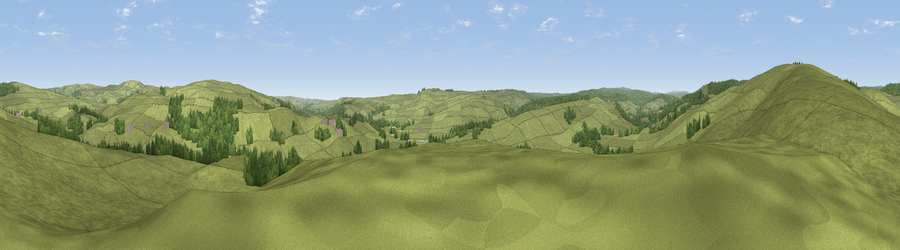

The Seat
#29552 in England · top 64% of its area beats it · near GreenhaughThe view, rendered

A 360° render of this exact spot computed from the terrain model, tree cover and land cover — summer colours, afternoon light, calibrated against photographs of famous viewpoints. Real trees, hedges and buildings will differ in detail.
The panorama
Grey silhouette: terrain skyline in each direction (720 bearings, Earth curvature and refraction included). Dashed green: skyline with trees (+15 m) and buildings (+8 m) as obstacles. Blue strip: how far the ground is visible on each bearing.
Where the view opens
Wedge length = distance to the farthest visible ground on that bearing (vegetation-aware). Rings at 10, 25 and 50 km.
What fills the view
91% grassland · 9% woodland
Angular shares of the visible panorama (visual magnitude), not map area. Landscape diversity 0.14 (0–1 Shannon).
Key numbers
More beautiful places nearby
The staircase of upgrades: each row has a higher view potential than everything closer. Driving times are estimates from straight-line distance, calibrated against real road routing — check an actual route before setting out.
| Place | Direction | Drive | Score |
|---|---|---|---|
| Viewpoint near Greenhaugh | NW · 2 km | ~5 min | 66.8 |
| Viewpoint near Greenhaugh | N · 4 km | ~9 min | 68.3 |
| Viewpoint near Greenhaugh | S · 5 km | ~10 min | 71.2 |
| Padon Hill | NNE · 7 km | ~15 min | 72.6 |
| Blackman's Law | NNW · 12 km | ~22 min | 74.1 |
| Monkside | NW · 13 km | ~24 min | 78.4 |
| Deadwater Fell | WNW · 19 km | ~32 min | 79.4 |
| Viewpoint c11995_7247 | NW · 21 km | ~35 min | 82.1 |
55.17430, -2.34299 · source: osm peak · position refined by local search. Computed location — check access rights before visiting.